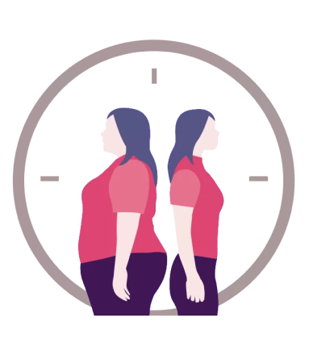

O IMC (Índice de Massa Corporal) é uma medida utilizada para avaliar se o peso de uma pessoa está adequado em relação à sua altura. Ele é calculado através de uma fórmula simples:
A partir do valor do IMC, é possível classificar a pessoa em diferentes faixas de peso, ajudando a identificar se ela está dentro de um intervalo saudável ou se apresenta risco para problemas de saúde relacionados ao peso. As principais classificações do IMC são:
- Abaixo do peso: IMC abaixo de 18,5
- Peso normal: IMC entre 18,5 e 24,9
- Sobrepeso: IMC entre 25 e 29,9
- Obesidade: IMC entre 30 e 34,9
- Obesidade grave: IMC entre 35 e 39,9
- Obesidade mórbida: IMC acima de 40
É importante destacar que o IMC não leva em consideração fatores como a distribuição de gordura corporal, a quantidade de massa muscular ou a composição do corpo. Por isso, pode haver limitações ao usar o IMC como única ferramenta de avaliação da saúde. Por exemplo, atletas com alta massa muscular podem ter um IMC elevado, mas não estarem acima do peso de forma saudável.
